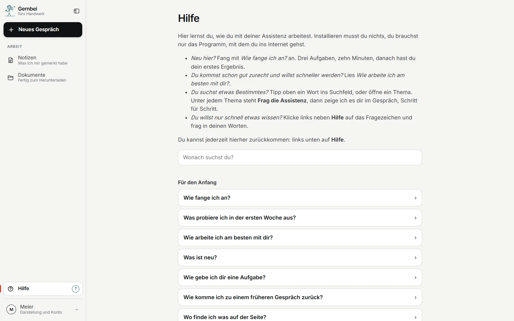

Für Handwerksbetriebe
Abends noch Büro? Jetzt nicht mehr.
Am Handy auf der Baustelle oder am Rechner im Büro: Sie geben ein Foto, ein Stichwort oder eine Sprachnachricht. Gernbei macht den Entwurf und merkt sich, was Sie dem Kunden zugesagt haben. Abschicken tun Sie.
Läuft bei Amazon. Sie installieren nichts, kein Rechner nötig.
Gernbei fürs Handwerk
am Handy, gesprochen, 16 Uhr
Am Handy auf der Baustelle,am Rechner im Büro. Dasselbe Gespräch.
Was Gernbei fürs Handwerk kann. Tippen Sie an.
Erfundener Betrieb. Entwurf: Probetext, die echte Antwort folgt.
So starten SieLäuft bei Amazon. Kein Rechner nötig.
Den Vertrag schließen wir nach dem Gespräch ab. Hakt etwas, helfe ich.
Sie kennen das
"Wann kommt ihr endlich, die Heizung tropft wieder." Die Antwort braucht den letzten Einsatz in diesem Haus, und der steht in einem Ordner im Büro.
Stunden und Material stehen auf einem Zettel. Abends wird daraus ein Bericht, wenn Sie noch können.
Raus ist es, geantwortet hat keiner. Nachfassen wollten Sie, aber es stand nirgends.
Das Gedächtnis von Gernbei
Jede Mail, jede Datei, jede Zusage wird abgelegt, mit Datum und Vorgang. Nach Wochen fragen Sie einfach.
„Was haben wir Huber im März zugesagt?“ Gernbei sucht in Ihren Notizen und Unterlagen
Jede Antwort nennt die Stelle, oder Gernbei sagt offen, dass es keinen Beleg gibt
Notizen und Dokumente sehen Sie jederzeit in der Arbeitsfläche, mit Suche. Alles lässt sich als Paket herunterladen
Was Gernbei für Sie tut
Angebot mit Aufmaß, Regiebericht, Abnahmeprotokoll, Fotodokumentation, Nachfassbrief, für Heizungsbetriebe das Wartungsangebot. Als Word-Datei, im Stil Ihrer eigenen Beispiele. Eine feste Vorlage nach Ihrem Muster baue ich auf Wunsch als eigenen Auftrag
Vor dem Versand prüft Gernbei Endsumme, Steuersatz und leere Felder und sagt, wenn etwas nicht passt. Die Angebotsnummer wird fortlaufend vergeben, auch über den Jahreswechsel
Mail oder Frage hereingeben, der Entwurf kennt den letzten Einsatz und die letzte Zusage
Der Regiezettel, die Kundenmail, das alte Angebot über die Büroklammer oder einfach ins Gespräch gezogen. Zahlen, die vom Foto gelesen werden, zeigt Gernbei Ihnen zur Kontrolle, bevor sie aufs Blatt gehen
Das Mikrofon Ihres Handys schreibt in die Zeile
Was Sie wem bis wann versprochen haben, steht als Zeile im Vorgang
Fehlt eine Angabe, fragt Gernbei nach, statt sie zu ergänzen. Was rausgeht, lesen Sie trotzdem vorher. Den nächsten Schritt tippen Sie einfach an
„kürzer", „förmlicher", „Familie Berger duzen wir": bleibt ab dann
Nachts wird gesichert und geprüft. Morgens weiß Gernbei, was offen ist. Nach dem Urlaub gibt es zuerst einen kurzen Stand
Bis zu drei Aufträge vormerken, Gernbei arbeitet sie nacheinander ab
Nachts oder auf Ihren Tipp. Eine Karte zeigt, was neu ist
Mit Microsoft 365
Gelesen und geschrieben wird nur, wenn Sie es sagen, und nur in der Datei, die Sie nennen. Gelöscht wird nichts. Wer Ihr Microsoft-Konto verwaltet, gibt die Verbindung einmal frei und kann sie jederzeit abschalten; das richte ich mit Ihnen ein.
Was Sie sonst einkaufen
| Sonst liefert das | Bei Gernbei im Preis |
|---|---|
| Social-Media-Agentur, Texter | Beiträge und Profiltexte für LinkedIn, Instagram, Facebook, TikTok, YouTube und das Google-Unternehmensprofil, aus Ihrer Ablage, mit Hinweis, wenn eine Pflichtangabe fehlt. Online stellen Sie selbst |
| Büroservice, Assistenz | Aufgaben organisieren: was ansteht, was wartet, was fällig ist, mit Fristen und Wiedervorlagen |
| Präsentationsgestalter | Ein Foliensatz aus einem Dokument oder drei Stichworten |
| Unternehmensberater | Eine Entscheidungsvorlage auf einer Seite, mit Empfehlung und Gegenrede |
| Projektbüro | Protokoll und Statusbericht aus Ihren Notizen |
| Moderator | Ein Workshop: Agenda, Moderationsplan, Ergebnisprotokoll aus den Fotos der Karten |
| Qualitätsberater | Maßstab und Prüfliste für das erste Blatt einer Art |
| Kanzlei, Dienstleister | Angaben über Dritte aus Unterlagen nehmen, bevor sie weitergehen: Personen werden Rollen, Anschriften werden Orte. Sie sehen das Ergebnis vorher, unsichere Stellen nennt Gernbei |
Online stellen Sie selbst, mit einem Klick, und das bleibt so.
Was Gernbei nicht tut
Gernbei geht nicht ans Telefon, schreibt nicht auf WhatsApp und verschickt nichts, auch nicht aus Outlook. Eine Frage, die per WhatsApp kam, geben Sie herein, die Antwort schicken Sie selbst. Hinaus geht nur, was Sie abschicken.
Sie sind nie allein

Die Hilfe, in der Arbeitsfläche selbst.
Der Preis
Den Preis nenne ich Ihnen im Gespräch, passend zu Ihrem Betrieb.
Dazu brauchen Sie ein eigenes Claude-Team bei Anthropic, dem Hersteller der KI.
Angebot nur für Unternehmer.
Kommt eine Bürokraft oder eine weitere Fachkraft dazu, bekommt diese Person einen eigenen Zugang zum selben Preis und sieht die eigene Arbeit. Einen gemeinsamen Bereich für alle vereinbaren wir auf Wunsch.
Wo Ihre Daten liegen
Ihre Unterlagen liegen bei Amazon Web Services in der EU, in Stockholm, in einem Bereich nur für Ihren Betrieb. Betreut und jede Nacht gesichert wird er von mir, neue Stände kommen von selbst. Was Gernbei für eine Antwort liest, verarbeitet Anthropic auch in den USA; Amazon und Anthropic sind amerikanische Unternehmen.
Bringen Sie eine Kundenmail, einen Regiezettel oder ein altes Angebot mit. In zehn Minuten sehen Sie, welchen Entwurf Gernbei daraus macht und woher die Angaben stammen.
Passt es, richte ich Ihnen den ersten Arbeitsplatz ein. Passt es nicht, sage ich Ihnen das.
● BAFA-gelisteter Berater · 50% Förderung für KMU, 1.750 EUR je Beratung
Oder direkt: hallo@gernbei.de · 0931 45321005 · Würzburg · remote & vor Ort